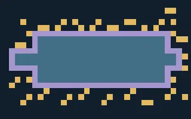

ORBITAL LIFT ARCHIVES
Tower Record Room
Explore the room and read the surviving records.
Loading records…
Prototype: texts supplied by the user. Letter-to-console links are provisional; exact runtime placement is not confirmed. Earlier floors and other missing records are not included.

Open interactive map & original placements ↗Records
Stored console positions
These markers are source coordinates, not confirmed dialogue assignments.